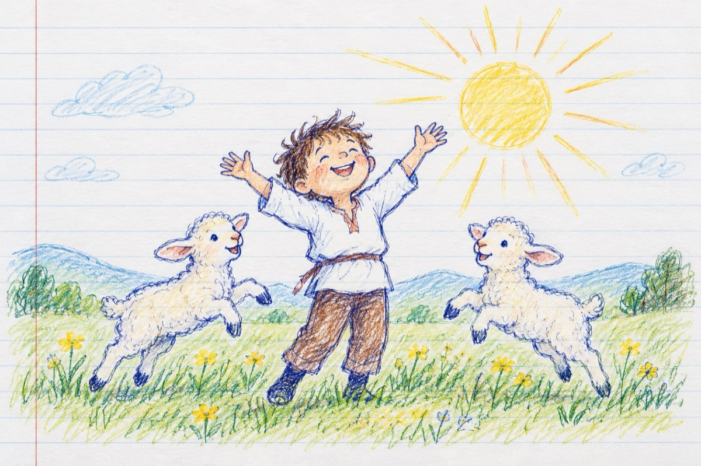

E ziua ta copile
Copile, a răsărit soarele
Ridică-ți către înălțiimi privirea
A victorie asupra vieții și brațele ridică-le
Astăzi e ziua ta!
Cântă cu toți copiii lumii bucuria
Zburdă, precum mieiii pe câmpie
Domnească între timpuri armonia
Și pacea veșnică, peste tot să fie!
Bucură-te și tu mamă, și tată și bunici,
La rândul vostru cum v-ați bucurat
Aduceți-vă aminte că și voi ați fost mici
Și viața prin voi a perpetuat
Iar astăzi, prin voința dpmnului suntem cu toții aici
Copii sunteți, copii am fost
Și tot mereu roata vieții se va-nvârti
Cum toate pe pământ își au un rost
În sufletele noastre, mereu copii vom fi!
Vasile Groza